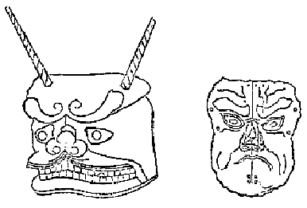
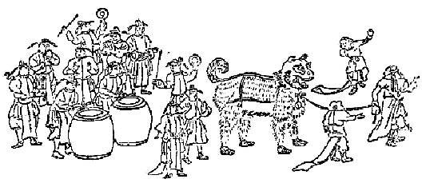
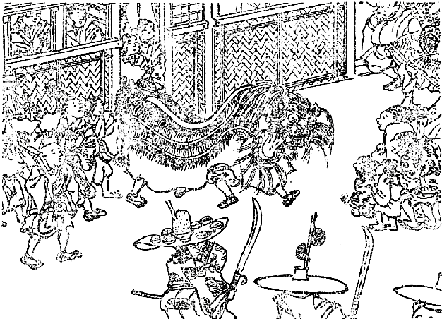

| 獅子舞雑考 | |
| 中山 太郎 | |
| (2012) | |
獅子舞雑考
中山太郎
我国の獅子舞は、起原をアッシリヤに発し、支那を経て輸入されたものであると、説く学者がある〔註一〕。しかしながら有体
に言えば、私の貧弱なる知識では、この説の前半の当否を、批判することが出来ぬのである。何となれば私はアッシリヤに関しては、毫末
の知識だに有していぬからである。けれども、その後半である支那からの輸入ということについては、多少とも批判を加えることが、出来るように考えている。
全体、我国の獅子舞については、従来これに関する発生、目的、変遷など、かなり詳細なる研究が発表されている。（Ａ）文献学的の稽査としては、喜多村信節翁の「筠庭雑考」に載せたもの、（Ｂ）民俗学的の考覈
としては柳田国男先生の「郷土研究」第三巻に収めたもの、（Ｃ）舞踊史的の観点に立脚したものでは、小寺融吉氏著の「近代舞踊史論」における記事を主なるものとして、この他の随筆的のものや、断片的のものに至ってはむしろ多きに苦しむほど存しているのである。従って、今更に獅子舞の起原とか目的とかを、考証せんと企てることは、所謂六菖十菊の愚を敢てするものとして、いたずらに識者の歯を寒からしめるのであるかは知らぬが、下世話に言う枯れ木も山の賑やかしとやら、笑われるのもまた学問のためと観念して、ここに管見を記して高叱を仰ぐとする。
私は管見を述べる前に、既載の代表的研究の論旨を検討し、それを略記する。そして喜多村翁の所説は、獅子舞は西域の亀茲
国の舞楽が、支那の文化とともに、我国に渡来したのであると云う、純乎たる輸入説である。柳田先生の所論は、我国には古く鹿舞
と云うものがあって、しかもそれが広く行われていたところへ、後に支那から渡来した獅子舞が、国音の相通から附会したものである。その証拠には、我国の各地において、古風を伝えているものに、角
のある獅子頭があり、これに加うるのに鹿を歌ったものを、獅子舞に用いていると云う、謂わば固有説とも見るべき考証である。さらに小寺氏の観察は、大体において柳田先生の固有説を承
け〔註二〕、別にこれに対して、我国の鹿舞の起ったのは、トーテム崇拝に由来するのであると、附け加えている。
そこで、今度は管見を記すべき順序となったが、これは私も小寺氏と同じく、柳田先生の御説をそのまま拝借する者であって、別段に奇説も異論も有している訳ではない。ただしいて言えば、我国の鹿舞と支那から来た獅子舞とは、その目的において全然別箇のものがあったと云う点が、相違しているのである。殊に小寺氏のトーテム説に至っては、あれだけの研究では、にわかに左袒
することの出来ぬのは勿論である。
こう言うと、何だか柳田先生の御説に、反対するように聞えるが、角の有無を以て鹿と獅子の区別をすることは、再考の余地があるように思われる。能楽の「石橋」を見ても大巾
には角はないが利巾
には角があり〔註三〕さらに我国の獅子頭にも、角のあるのは決して珍しいものではなく、しかもこの角が必ずしも鹿のそれだとばかり定められぬ点がある。例えば武蔵北葛飾郡戸ヶ崎村大字戸ヶ崎に、三ツ獅子の頭というのがあり、その形は越後獅子の頭に似て、竜の角の如き股のある二本角で、鶴の毛で飾ったものであるが、これを三ツ獅子と称するのは、虬
をミツと訓んだ転訛であろうと〔註四〕。かつてこの獅子頭を用いて、利根対岸の堤を崩した恠談
を伝えている。これから推すと、この獅子頭は鹿よりは竜に近いものと、見るべきである。さらに留意しなければならぬ点は、武蔵の豊嶋、足立、葛飾の各郡村では、獅子頭を呼ぶに「竜体獅子」という俚称のある事である。先頃、民俗芸術会の同人諸氏と見学した、赤塚村大字徳丸本の獅子舞に用いた頭なども、土地の人々は「重箱獅子」と云うているが、鶏毛で飾り角の生え工合から見ると、これも竜体の一種であることは、容易に看取される。図師嘉彦氏が描いた、秩父の三峯神社用の獅子頭のスケッチなどを見ても、角に枝のあるところが、竜に近いもののように思われる。
勿論、獅子頭の角には、私の見たものだけでも、一本のと二本との区別があり、さらに一本のにも角らしいのと玉らしいものとの相違があり、二本のにもその生え工合の相違しているものがある。そして、一本角は能楽の利巾系のものであって、玉のようになったのは、これの退化したのではないかと思われるが、私の学力ではこれ以上のことは判然しない。二本角にあっては、武蔵国北豊嶋郡岩淵町大字赤羽の、八幡社の社宝である獅子頭は、春日の作と伝えているが、大きな角が約九十度位の角度で生えている〔註五〕。それから先年ネフスキー氏が、陸中国上閉伊郡土淵村で撮影した写真に拠ると、これも立派に二本の角を有しているが、その角は左右に開いている。さらに徳丸本の獅子頭の角（雄獅子は黒、中獅子は赤）は二本であるが、竜のそれの如くナセ
になっている。私とてもこうした角の生やし方は、その土地に限られた、所謂郷土舞踊の約束（または流派）に負うところのあるのは承知しているが、それかと云うてこの角の有無が、鹿と獅子との区別の決定要因だとは、考えられぬのである。
徳丸本の見学の帰途、雨の中を同行の永田衡吉氏と、獅子舞の見聞談を交えながら歩いて来たが、そのうちで永田氏の語られた左の一節は、一寸、私の注意を喚び起したものであった。曰く、
全体、ライオン系の獅子頭に、角があるということは、別段にそれが鹿であったという意味ではなく、舞踊の点から雄獅子を勇壮に、かつ男性的に見せる必要から、角を加えたものではなかろうか。実際、見た眼から言っても、角のある方が、如何にも立派に勇しく見えるのです云々（在文責記者）。
舞踊に関しては、全く門外漢の私とて、これについて兎角の批評は言えぬけれども、こうした見方も許されるものと考えている。そして、それと同時に獅子の角には、狛犬の角と関係のあることも、併せ考えなければならぬと信じている。現に見かけるところであるが、神社の広前に置かれてある狛犬には、狛犬だか獅子だか分らぬまでに雑糅
されてしまい、角（真中に一本）を生やしたものも、少くないのである。「筠庭雑考」に「禁秘抄」を引用して『角なきは獅子、角あるは狛犬なり』と云うているけれども、実際には角のある獅子が、狛犬の代理をしているのも、決して珍しくない。こうした混雑は、獅子と狛犬とを同視するまでになり、その結果は獅子頭に角をはやすまでになったものではあるまいかとも、考えられるのである。
我が固有の鹿舞に、支那の獅子舞が附会習合された事は、柳田先生の説かれた如くであるが、さて、鹿舞と獅子舞との区別を、角の有無で判定するよりは、一人獅子（俗に立ち獅子と云い、一人にて獅子頭を被るもの）と二人獅子（頭と尾とに一人ずつ二人入るもの）とによって、区別したならば如何なものかと思われる。換言すれば一人立
は固有の鹿舞系のものであって、二人立は獅子舞系のものと見るのである。勿論、これには舞踊の変遷ということを、考えなければならぬが、大体においてこう見る事が、出来はしないかと思うている。私は鹿踊というものは、僅に二つしか見たことがないので、余り口綺麗なことも言えぬけれども、伊予の宇和島の八ツ鹿踊（大正十三年に東京に来た事がある）と、摂津の多田村の多田神社の鹿踊（今では南無手踊というている）とだけであるが、この二つは、双方とも一人の青年が、鹿踊を遣るものであって、鹿踊に二人立はないように思われる。これは鹿の体軀や所作を模倣する点からも、一人で十分であって、二人では、かえって面白くないからである。
しかるに獅子舞の方には、一人立と二人立（稀には三人立のもある）とあって、前者には下総香取社、越後五泉町の秋祭の獅子〔註六〕。「筠庭雑考」に載せた寛永頃の古絵などを始めとして、各地に沢山存しているし、後者には古いものでは、信西入道伝来の「獅子舞図」（古典全集本）、及び「年中行事絵巻」（平安朝）などを主なるものとして、これも各地に夥しきまでに存しているが、私には何となく、一人立は鹿舞踊の古風を残したもの、二人立は舶来の今様を伝えたもののように思われる。「賀茂縁起」の『馬係レ
鈴、人蒙二
猪頭一
、而駈馳、以為二
祭礼一
』とあるのは、記載が古いだけに珍重すべき資料であるが、しかもこれによると、一人立の猪頭
と見て差支えないようである。春駒
にしても大昔はこれと同じく、駒の頭を被った一人立であったところから推すと、鹿踊も一人立を原則としたものではなかったろうか。

Ⅸ赤羽八幡社の獅子頭

Ⅸ信西入道伝来の獅子舞図

Ⅸ平安朝の獅子舞（年中行事絵巻）
獅子舞は後世になると、もっぱら神社に属してしまったが、これは古くは寺院に属していて、葬礼または仏会
の折に、用いられたものと考うべきである。奈良の東大寺や大阪の天王寺の獅子舞は、ともに有名なものであって、しかもその創始期は、獅子舞が隋唐の文化とともに、我国に輸入された奈良朝まで溯ることが出来るように思われる。さらに「江家次第」によると、興福寺や法勝寺にも、獅子舞のあったことが見えているから、寺院と獅子舞との関係は、神社と獅子舞との交渉よりは、一段と古いものであったと見て、差支えないようである。
それでは神社の獅子舞は、寺院のそれを学んだものかと云うに、私には決して左様であったとは信ぜられぬ。即ちここに我が固有の鹿踊へ、渡来の獅子舞が、附会したのであると考えるのである。
詳言すれば我国の鹿踊は、元から神社に附属（鹿踊の起原や発達を言わぬと、独り合点に陥る嫌いもあるが、それを言うと埒外に出るし、かつ長文になるので省筆する）していたのであるが、そこへ支那から来た獅子舞が、寺院に多く用いられ、神社（鹿踊）対寺院（獅子舞）と云った具合に、各々独自の境地を有していたのであるがそれが例の本地垂迹説の大成とともに、神仏一如の信仰となり、さらに和光同塵の思想となって、仏説で神道を支配するようになったので、遂に鹿踊と獅子舞とが、習合され渾成されるようになったのであると、考えたいのである。そして、この獅子舞が仏教の事相――と云うよりは葬礼に深い関係を有していたことは、これを各地の土俗に徴するとき、やや明確に知ることが出来るのである。
元禄年中に、古河古松軒の記した「四神地名録」に『荏原郡大森村巌正寺（浄土宗）にては、毎年七月の仏祭に村の若い者大勢集りて、終日獅子舞をして追善とす。古
へよりの例なれども、其故解しがたし』と載せてある。しかるに文政年中に完成した「新編武蔵風土記稿」（巻四一）に拠ると、この獅子舞は（原註に、獅子頭と称すれども、麟竜の頭に似せて作りしものとあるのから推すと、謂
ゆる竜体獅子の一つであると思われる）は、雨乞のために行ったが、恒例となったのであると説明している。そして、この仏祭獅子であったのが、雨乞獅子と変遷した過程は、即ち寺院から神社へと、獅子舞が移って往った道筋を、物語っているものとして、注意すべき点である。私は、支那から渡来した獅子舞の目的は（伎楽としての目的はしばらく別問題として）、葬儀に際して疎
び荒
び来る死の凶霊を、百獣の王である獅子の威光によって、払い除ける呪力あるものとして、用いたのに始まると考えている。ここで少しく筆路が脱線するが、私にこうした、考えを懐
かせた支那の文献について、一瞥を投じて見たいと思うのである。即ち「中華全国民俗志」（下篇巻二）、山東省喪礼の条に、左の如き記事が載せてある。
殯期至、親及最契之友、送獅豹、獅豹者、用花毯作身、木作首尾、一人裏於其中、開弔時、列於大門左右、及啓霊、獅豹先入於霊前舞踏、喪家先備制銭一千或両千、置於霊几、舞踏畢、臥干旁、従腹中出小獅討喜銭、即攫几前銭而去、間有用数人、仮戯場衣冠、於獅豹舞畢、演戯一折、然後啓霊、此等郷間皆親友為之、城市有用貧者、
この記事によれば、山東省（往古の呉国の在りしところで、我国と最も深い通商関係を有していた国である）では、死人があると、その親族や友人が、獅子を作って送り、霊を啓
くに先だち、棺前で舞踏するのであるが、その目的が、凶霊を退ける信仰に由来していることは明白である。さらに同書（下篇巻五）。安徽省の舞獅子の条に、涇県東郷侫神記を引用して、下の如く記してある。
（上略）設有人病者、必迎獅子至病人室中、周視一巡、以祓除不祥、初生小児、将渠含至獅子口中、謂容易長大云々。其期自元旦日始、至三初月三日止、各村輪次而舞、或全堂（一日）或半堂（半日）皆有定例、迎獅子神者、必斎戒茹素、格誠格敬、無敢稍怠、舞獅子之人、率本地祠丁、平日被役於人、独此日儼然尊大、一若渠即獅子神也。
こうした土俗も、支那の各省に渉り、仔細に詮索したらば、まだたくさんに存することと思うが、ここにはその手数を省き、わずかにこの一例だけで説を試みるとするが、これと共通した土俗は、我国の到る所に、今において存しているのである。中道等氏の本誌前号に記された、奥州の墓獅子の供養は、啓霊前に行われた獅子舞の延長とも、または獅子舞の地方的分化とも見られるのであって、さらに同氏の談によれば、東北地方には、小児の保健や除災のために、その小児の着衣を、獅子に咬
んでもらう土俗が、存しているそうである。そして、これから推測するのも、はなはだ早速ではあるが、今に東京で見かける太神楽の獅子が、見物の小児の天窓
を、咬むような所作をするのは、古くこの種の土俗から導かれているのではなかろうか。獅子神に扮する者が、平素人に役
われる身分軽き祠丁でありながら、その折だけは、獅子神の如く尊大に振舞うとは、我が甲斐国の各村に行われた、獅子舞の聟いじめの折に、往々、村の定使
と称する者が、この役に扮したことと照合するものとして、すこぶる興味が深いものがある〔註七〕。
神社祭の行列の先頭に、猿田彦と称する鼻高神が立つように、葬列の先頭に、獅子頭を捧げて行く土俗は今に各地に存している〔註八〕。私の郷里などで竜頭と称するのも、仔細に研究したら、或いは竜体獅子の変身であるかも知れぬ。古く遊行派のヒジリ達が、この獅子舞を取り込み、それを民俗芸術化して豊斎念仏にまで用いているのも、獅子が元々仏縁に関係が深かったためである。なお豊斎念仏にて行う獅子踊についても、記したいことがあるも、長文を恐れて省略に従うとする。
伊勢国には獅子の神事と土俗とが、他国に比して、一段と多く存しているようである。この原因についても、多少の臆説を有しているが、結末を急ぐために除筆して、これらの神事や土俗に関する管見を、記すにとどめるとする。そして、これらのうちに二つの関心すべきことがある、（Ａ）は宇治山田市字箕曲
の神事であるが、「勢陽五鈴遺響」に『箕曲
神社とて、当社に獅子頭一口あり、毎年正月十五六七の三日間、御頭の神事といふあり、土人その社の神体の如く崇敬す。相伝ふ、昔はその民家の悪気を追ふとて、箕
を二口合せて、獅子の頭に擬似して戸々を巡り、その祭り畢
るときは、燎火にて焼棄
たるなりと。今に二見郷の三津村にては毎年正月に、村民箕にて作るところの、獅子頭を祭ると云ふ』と載せたことである（以上。摘要）。これに拠るとこの獅子は、悪気を追う――即ち除災が目的であって、しかも祭の後に焼くとは、その獅子に災厄を負わせるほどの贖物
の思想が、潜んでいたことが知られるのである。なお箕で獅子頭を作ることも、土俗学的に考うべき多少の愚案がないでもないが今は省略する。（Ｂ）は同じ五鈴遺響に『河芸郡玉垣村大字岸岡に、式内の貴志神社あり、祭神は天鈿女
なり。土人相伝ふ、往古、金銅の獅子頭を、此の神社の壇下に埋めたり、これに依つて今に至り、他社の獅子頭この地を過るときは、必ず頭を低て拝礼して去る。これ遺習なり』とある記事である。勿論、獅子頭を埋めて獅子塚または獅子舞塚と称した例は、独り伊勢に限つたことでなく、ほとんど全国的に存していることである。かつ中道等氏より承るところによると、現に獅子頭を埋めて霊地とする土俗が、東北地方にあるとのことゆえ、別に取り立てて言うほどの事ではないかも知れぬが、ただ私として考えて見たいと思う点は、この土俗は果して大昔から獅子頭を埋めたものか、或いは獅子ではなく鹿ではなかったかと云うことである。
由来、我国の義犬伝説には、およそ三つの形式があるが、そのうちに狩犬が千頭の獲物を猟主に捕らせると、犬が猟主に仇をするとて、九百九十九頭のときに、その狩犬を殺すという、迷信から来た義犬伝説の一形式がある。そして、各地に存している犬供養塔は、概してこの種の伝説が基調をなしているのである。鯨や猪や鮭の供養塔は、これと違い沢山捕獲して、その生命を断ったために、建てて冥福を祈るというものである。そして、この信仰は、直ちに鹿の上にも見られることであって、殊に霊魂動物であった鹿は、他の鯨や猪などよりは、供養を受くべき資格が備わっているのである。その点から推して獅子塚の起りは、鹿塚であったのが、後に獅子に附会されてしまい、遂に三河国額田郡伊田村の獅子舞塚の如く、天子御悩の時、御願により、六十六ヶ国に獅子頭を納めたという、伝説を生むようになったのであると〔註九〕、考えたいのである。
私の雑考も、獅子頭の鼻毛の如く、それからそれへといたずらに長くなったので、この辺で打ち切ろうと思うたが獅子の鼻毛の出たついでに、これに関する一挿話を掲げて擱筆する。「三州吉田領風俗問状答」に『吉田（現今の豊橋市）産土神
（天王社）の祭は、正月十四日なり。榎玉争ひ赤鬼からかひの式等終れば、神輿渡御になる。然るに此神輿は、旧き獅子頭のみにて些
かの彩りなく、古風に不器用なるものなり。家の如き形したる物に入れて、禰宜
一人して頭に頂きて行くなり。此獅子頭の鼻毛は、祭日の朝に、吉田の町の所々の入口に氏子出張し、何れの馬を問はず、その所を通りかゝりたる、三匹目の馬の尾を、切て用ふるなり。其馬に供餅一膳と銭十二文を与ふ。然れども其馬は命短しとて皆之を厭ふ』と載せてある。獅子の鼻毛に馬の尻尾は、配合が実に妙を極めているが、しかし三匹目の馬を捉えることは、尾張国府宮の神事や、太宰府の天満宮の神事に三人目の旅人を捉えた信仰と、共通したものであろう。
〔註一〕中央史壇の東洋美術号で赤堀又次郎氏はかく述べていられる。
〔註二〕小寺氏はその著に柳田先生の所説を引用していらるるので、こう言うても差支えないと思う。
〔註三〕関秘録（随筆大観本）巻八。
〔註四〕古河古松軒の四神地名録。
〔註五〕新編武蔵風土記稿。因に本誌第一巻（九五ページ）の余白に、能登十六氏の投稿で、越中国射水神社の獅子頭が竜頭であろうとの記事が見えている。
〔註六〕郷土研究第三巻第十二号。
〔註七〕甲斐の落葉（炉辺叢書本）
〔註八〕中道等氏の談によると、東北地方で見かけるとのことである。中山曰。神事の行列の獅子頭を先頭に立てるのは、除魔の信仰であることは勿論だが、蓋
しその初めは仏教のを真似たのであろう。
〔註九〕三河二葉ノ松巻五。
底本：「タブーに挑む民俗学 中山太郎土俗学エッセイ集成」河出書房新社
２００７（平成19
）年3
月30
日初版発行
底本の親本：「日本民俗学論考」一誠社
１９３３（昭和8
）年
初出：「民俗芸術 第三巻第一号」
１９３０（昭和5
）年
※底本は、物を数える際や地名などに用いる「ヶ」（区点番号5-86）を、大振りにつくっています。
※初出時の表題は「獅子舞漫考」です。
入力：しだひろし
校正：門田裕志
２０１２年5
月1
日作成
青空文庫作成ファイル：
このファイルは、インターネットの図書館、青空文庫（http://www.aozora.gr.jp/）で作られました。入力、校正、制作にあたったのは、ボランティアの皆さんです。